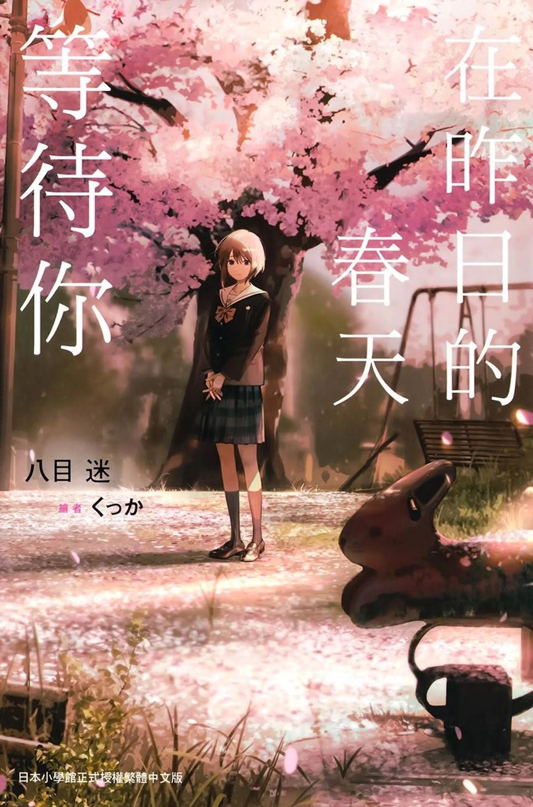

前言
《在昨日的春天等待你》，八目迷**「时与四季」系列第二作。早在半年前我就已经读完了，本文应该是早段时间就应该写完了的，可是拖延症一发作就把这个事情给忘记了，好在终于想起来了，最近也正在阅读「时与四季」**的第三部，正好就一起写了吧。关于系列上一部的文章点此可以阅读：
“所谓特别，应该是由平凡不断累积而成的吧”《通往夏天的隧道，再见的出口》
书评正文
一提到八目迷我脑海里第一个词就是***<重力感>，具有重力感的小说，是能让你抛开现实生活中的负面情绪并将你拉入故事中的作品，这部作品里，<重力感>***真真切切的体现出来了，读的时候很引人入胜，但故事内核深入的部分还是比较单薄（毕竟还是轻小说）。
人物塑造和伏笔都还不错，文笔也很流畅，八目迷想体现的***<重力感>*** 我感觉比上一作“浦岛隧道”的体现的更多了，真的让能让人沉浸进去，不知不觉几个小时看过去还有些意犹未尽.。
反向loop的设定很有意思，剧情编排的紧凑，双视角的描写也将故事完完整整的描写出来了，通常的双视角使用不当可能会带来很重的撕裂感，而八目迷的这部小说让我感觉就用得恰到好处，割裂的感觉并没有很重，反而双视角加上第一人称的描写方式，能很好的描写人物形象，这种手法在保留悬念的同时也很好的展示了何为*“昨日的春天”，何为“等待你”**，***这样的手法也算是这本小说的重要一环。
也许熟悉轻小说的读者会觉得设定平平无奇，但八目迷的写作手法蛮优秀的，小说里的心理描写，形象描写都来得恰到好处，没有太多冗长无聊的心理对白，也没有无病呻吟的情感表达和自以为是的人生说教，情节发展设计得非常紧凑流畅，视角也紧扣主角，没有多余无用的场景。
推动剧情前进的**“时间跳跃”也并不只是为了博人眼球的设定，它作为剧情发展的框架，实实在在的推动剧情向前，也没有多余复杂的设计，这一点比起上一作仅仅作为背景板的*“*浦岛隧道“**要好上不少。阅读起来相当舒服，对比起其他轻小说内核浅薄的“Boy Meets Girls”式的剧情，要好上不少，故事也有八目迷一贯的清新感。
不足之处也与上一作类似，反向loop的设定，让未来与过去的衔接设计非常有趣，这样有意思的设定没有精雕细琢，时间线悖论等元素的部分应该可以更深入，这个设定深挖下其实可以有很多的东西，但就和***“浦岛隧道“一样，也许是局限在“轻小说”的框架中，仅仅成为了青春故事的辅成部分；都市-离岛仅仅只是拉开距离的背景板没啥深层次的东西；最后破局的部分个人觉得有些平淡无味，剧情最后的HappyEnd，其实让我感觉有些落入俗套，过于简单治愈了；情节编排上，基于loop的设定，伏笔的设置和更加多重反转是可以做得更好的；虽然对比前作在手法各个方面都有提升，但在故事内核*上，反而不如前作深刻。
总之就是还是约束在了轻小说中的青春小说里，不过作为具有***<重力感>***的轻文学，它也足够优秀了。
无法改编的昨日，救赎自我的春天
八目迷在明显的目的性主线里埋藏了疑点，比起改变过去，似乎更倾向于发掘埋藏在过去，隐藏在现在那不为人知的秘密。也许现实中我们有太多的遗憾无法填平，能穿越时空的主人公尚且只能通过接受过去救赎来救赎自己，那对于无法穿越时空的我们来说，也唯有接受和思考，与其陷在过去的泥潭，不如抓住尚未到来的明天。
在昨日的春天等待你，不如在明日的盛夏与你并肩
本文就此结束，下一次让我们在琥珀色的秋天相聚吧！
2023/8/1
Yuay
@Yuay